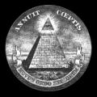

"Mr. President, about thirty-five minutes
ago, General Jack Ripper, the commanding General of Burpelson Air Force Base, issued an order to
the 34 B-52's of his wing which were airborne at the time as part of a special exercise we were
holding called Operation Dropkick. Now, it appears that the order called for the planes to
attack their targets inside Russia."
- Turgidson tábornok a Dr. Strangelove címû
filmben
A harmadik világháború megvívására számtalan terv született keleten és
nyugaton egyaránt. Középkorú katonaviseltek még emlékezhetnek a Varsói Szerzõdés azon
elképzelésére, miszerint a Magyar Néphadsereg páncélos alakulatai a Pó völgyében elõretörve,
atombombákkal megsemmisített osztrák és északolasz városokon keresztültörve érték volna el Milánó
és Piacenza stratégiai célpontjait. Ez a terv csak annyiban sántított, hogy a tervezõk úgy
sejtették, vissza nem is fognak lõni, és a komáromi vasúti híd illetve a gyõri légvédelmi
rakétadandár elpusztulásán kívül nem lesz itt nagy gebasz, hiszen a szovjet stratégia
felsõbbrendû, a NATO meg úgyis hülye. Le is nézték: a haditervben "fillah" és "piacsenza"
szerepelt, kisbetûvel, amúgy póriasan. Odaát, az ellenségnél ezt egy kicsit másképp gondolták, s
így történt, hogy az amerikai 6. flotta kapta azt a nemes feladatot, hogy kis hazánkat atomtûzbe
borítsa, indítva egy 1 megatonnás töltettel pontosan a Keleti pályaudvar fölött, lévén Budapest
mértani középpontja, majd hasonló szeretetcsomagokkal kínálja meg iparvárosainkat Almásfüzitõtõl
Záhonyig, kivéve Dunaújvárost, mert azt valamiért nem vették túl komolyan. De ezek már
hetvenes-nyolcvanas évekbeli stratégiai tervek voltak, és szerencsére csak Kelet-Európa
szeszesital-állományát érte jelentõs pusztítás általuk, amit tudniillik a Varsói Szerzõdés
fõtisztjei és tábornokai elfogyasztottak a különféle hadgyakorlatok és a leendõ hadszínterek
turistának álcázva történõ bejárása során. Egyébként is csúnya lett volna egy egész megatonna a
Keleti fölött 1 km magasan, pláne, ha még a Csepel Mûvek is kap 500 kilotonnát: nagyjából Monorig,
Kiskunlacházáig, Szentendréig és Bicskéig szevasz lett volna minden élõnek, különösen mivel a
NATO-doktrína minden csapás legalább kétszeri megismétlését írta elõ, félórás idõközönként. Lett
volna Nemzeti Gödör üvegburkolattal, az biztos.
A boldog ötvenes években, amikor még kacagva
és fiatalon kergették egymást a ma már zsémbesen bûzölgõ, fogatlan posztkommunisták, és Sztálin
elvtárs örökké élni látszott, máshogy képzelték mindezt. Atombomba ugyan már akkor is volt, de nem
volt belõle sok, és a stratégiai rakétacsapás fogalma is csupán elméleti értelemmel bírt, lévén
hogy még nem léteztek interkontinentális rakéták. Máshogy kellett volna ezt elintézni, a jó öreg
puskával és szuronnyal, valamint tankokkal, repülõkkel és egyebekkel. Ekkoriban tették le Harry
S Truman elnök asztalára az
Operation Dropshot címû,
Most Secret, Eyes Only bélyegzõkkel kiagyusztált
papírköteget, amely stratégiai elemzést tartalmazott arra nézve, mikor és hogyan is robban majd
ki a várva várt III. világháború.
Harry S Truman mellesleg különös ember volt: a középsõ
neve annyi volt, hogy "S", pont nélkül. De ennek semmi köze a háborúhoz.
A Dropshot-terv
három kérdésre kereste a választ.
- Hogyan fog elkezdõdni a háború?
- Hogyan fog
lefolyni a háború?
- Mi lesz a háború után?
A technika örvendetes fejlõdésének hála, a
késõbbi tervekbõl elõbb a harmadik, majd a második kérdéskör is kikerülhetett, megkönnyítve a
világvége-tervezõk dolgát. Az 1949-ben kidolgozott Dropshot-terv 1957-re jövendölte a nagy balhé
kitörését, ám ebben - ma már tudjuk - tévedtek. Mint ahogy abban is, hogy a nukleáris fegyverek,
bár hasznosak, nem fogják eldönteni a háború kimenetelét. Teljesen kihagyták a számításból a
rakétafegyverzet fejlõdését, az interkontinentális rakétákat, amelyek akkor még ötletként sem
merültek fel, legalábbis Werner von Braun még nem kapott akkora fizetési csekket, hogy beszéljen
róla, Verne Gyula regényeit pedig nyilván nem olvasták a derék elemzõk. Az atombombát 1949-ben
csak megtorló fegyverként vagy végsõ megoldásként tekintették, a Dropshot-terv a III.
világháborút hagyományos fegyverekkel tervezte megvívni. Igaz, megjegyzésként szerepelt a mûben,
hogy ha valamelyik fél kifejleszt egy olyan rakétát, amely képes egy atombombát hozzávetõleges
pontossággal átrepíteni az eurázsiai kontinensrõl az amerikaira, alapvetõen változik meg a
stratégiai helyzet, és ki lehet dobni az egész paksamétát. Az még nekik sem merült fel a
fejükben, hogy az oroszok lesznek olyan pofátlanok, és Kubába viszik a rakétáikat. De hát ki lát
a jövõbe?
Azok az ötvenes évekbeli
oktatófilmek, amelyek atomcsapás esetére a hasravágódást -
duck
and cover - javasolják, már húsz évvel késõbb is kacagtatóak voltak. Ellenben ha
figyelembe vesszük, hogy a Dropshot elemzõi szerint a szovjetek legfeljebb két atombombát tudtak
volna ledobni az Egyesült Államok területére, már nem annyira. Hiszen ha nem pont az ember
fejére ejtik, az akkori atombombák még nem voltak valami nagy hatásúak. A Little Boy, ha a
Keleti fölött robbant volna, nagyjából a Dunáig rombolt volna, az 1949-ben ismert bombák pedig
nem sokkal voltak nagyobbak. Ami az amerikaiak terveit illeti, õk az uráli ipari körzeteket
szerették volna megszórni kevés bombájukkal, terveik szerint talán egy tucatnyival, ami nem is
volt olyan rossz becslés a jövõre nézve, hiszen a koreai háborúban csak azért nem vetették be az
atomfegyvert, hiába követelte MacArthur tábornok (az is egy szép pofa volt, majd egyszer írok
róla), mert csak 13 darab volt belõle.
Az akkori elképzelések szerint a háborút nem
valamiféle véletlen robbantotta volna ki. Ekkor még nem voltak állandó készültségben járõrözõ
atomhordozó bombázóegységek, sem - mint említettem - rakétaütegek. Ez a háború is, akárcsak az
elõzõ kettõ, általános mozgósítással, a tartalékok behívásával kezdõdött volna, hetekig,
hónapokig tartó felvonulással, nem pedig hirtelen lerohanással. Az elsõ hadmûveletek
megkezdéséig heves járõrharcok és kisebb vállalkozások zavarták volna a nyugalmat minden
frontvonalon, azaz gyakorlatilag Németországtól Koreáig. A háború elsõ szakaszát az döntötte
volna el, ki lesz képes gyorsabban felszerelni, a hadszínterekre juttatni és ellátni egy
sokmilliós tömeghadsereget. Azonban ha ez már mindkét fél részérõl megtörtént, klasszikus
anyagháború következett volna, azaz: aki elõbb tudja felhalmozni a készleteket, hogy egy nagy
hadmûveletet megindítson, az nyer. Legalábbis egy-egy hadszíntéren.
Az elemzõk
feltételezték, hogy a Szovjetunióban háborúpárti a vezetés, amely fegyveres úton kívánja
kiterjeszteni a kommunista uralmat Nyugat-Európára. Sztálin személyében ez a feltétel adott is
volt, hiszen ne feledjük el, hogy már 1941-ben is csupán órák választották el a Vörös Hadsereget
az indulási parancstól, amit a német megelõzõ csapás meghiúsított. (A történelemoktatás
vélhetõen soká fogja követni a történészek kutatásait, már ha egyáltalán. Bár már évek óta
bizonyított, hogy Németország nem önszántából támadta meg a Szovjetuniót, az iskolákban még
mindig a régi marxista dogmát tanítják a "fasiszta agresszorokról", ahogyan a holokauszt
legendáját sem lehet egykönnyen kiirtani a régivágású tanárok emlékezetébõl, vagy akár József
Attila öngyilkosságának elméletét, amirõl pedig szintén jónéhány éve bebizonyították, hogy nem
öngyilkosság volt, hanem szerencsétlen baleset.) A másik feltétel, hogy a háború nagyjából az
elõrejelzett módon robbanjon ki, egy túl gyengekezû vagy éppen túl erõteljesen fellépõ amerikai
vezetés. Az, hogy Trumant Dwight D. Eisenhower követte az elnöki székben - és neki már volt
pontja, mint ahogy középsõ neve is - valószínûleg megmentette a háborútól az amerikai népet,
ugyanis "Ike" tapasztalt katonaként, ötcsillagos tábornokként tudta, mennyire kell komolyan
venni azokat a vészjósló elemzéseket, amelyeket Kasszandraként riogató tanácsadói tettek le
íróasztalára alkalmanként, hihetetlen mértékû szovjet fegyverkezésrõl zagyválva. Az ötvenes évek
amerikai gazdagsága fõként annak volt köszönhetõ, hogy Eisenhower visszafogta a katonai
kiadásokat, és inkább a polgári jólét fokozására fordította az ország erõforrásait.
De mi lett volna,
ha nem Eisenhower nyeri az elnökválasztást? Megnyerhette volna azt 1956-ban Richard Nixon, aki
késõbb valóban elnök lett, de politikája valószínûleg nem különbözött volna sokban a szintén
republikánus Eisenhowerétõl. A demokraták ellenjelöltje Adlai E. Stevenson volt, Illinois
kormányzója, aki liberális nézeteirõl, kiváló szónoki képességeirõl és humanista elkötelezettségérõl
volt ismert. Politikai példaképének Woodrow Wilsont tekintette, így aztán biztosak lehetünk
benne, hogy ha õ kerül hatalomra, egy szentimentális, érzelmi alapon határozó elnököt kaptak
volna az amerikaiak a hideg fejjel, logikusan döntõ Eisenhower, vagy négy évvel késõbb a
hasonlóan racionális John F. Kennedy helyett.
Stevenson elkötelezett szovjetellenesként
sokat beszélt a Szovjetunió ellen indítandó háborúról. Beszédírója, John Kenneth Galbraith
megemlékezett arról, hogy beszédeibõl gyakran kellett a jóízlés határán is túlmenõ kirohanásokat
törölnie, melyek egytõl-egyig ezen eljövendõ háborút propagálták. Hogy ezek a kijelentések
valóban politikai szándékot tükröztek, kétséges, inkább csak a demokraták kommunistaellenességét
hangsúlyozták, ám még egy ilyen kardcsörtetés is komoly feszültséget okozott volna az ötvenes
évek amúgy sem túl nyugodt légkörében, ha Sztálint feltételezzük a Szovjetunió
vezetõjének.
Mi lett volna, ha 1956-ban Stevenson az elnök, és nem Eisenhower?
Valószínûleg sosem hangzik el a híres mondat az Ovális Irodában:
"Isten látja a lelkem, szeretnék segíteni, de nem tehetem." Ezt mondta ugyanis
Eisenhower, miután tanácsadóival felmérték, milyen következményekkel járna egy esetleges
beavatkozás a magyarországi forradalomba. A baloldali Stevenson azonban nem habozott volna ezt
megtenni, vagy legalább csapatokat vezényelni Nyugat-Európába, hogy késõbbi népfelkeléseknek
segítséget nyújtsanak. Ha így történt volna, bizonyára lettek is volna ilyen felkelések, és minden
bizonnyal kitört volna a sokat emlegetett III. világháború. Ez az, amit Eisenhower, a képzett
katona átlátott, de rajta kívül kevesen. Az is valószínû, hogy egy ilyen csapatösszpontosítás
esetén Sztálin nem várta volna meg, míg azok beérkeznek, hanem villámháborúban elfoglalta volna
Nyugat-Európát az Atlanti-óceán partjáig, amit a még mindig háborús szinten tartott és
fejlesztett Vörös Hadsereg valószínûleg játszva elért volna néhány nap alatt, félresöpörve a
békelétszámra csökkentett brit, francia és amerikai expedíciós csapatokat. A Dropshot-terv
pontosan ezt a forgatókönyvet vázolja egy esetleges kelet-európai szovjetellenes felkelés
esetére, javasolva az elnöknek, hogy ne lépjen közbe. Eisenhower meg is fogadta ezt.
De
mi történt volna, ha kitör a nyugat-európai háború? Értelemszerûen a Közel-Keleten és a
Csendes-óceánon sem maradt volna béke sokáig. A Dropshot tervezõi ugyan tervként jelölték meg a
szovjet hadsereg megállítását valahol Németországban, ám reális esélyt csak arra láttak, hogy
Nagy-Britanniát megtartsák. Norman Schwarzkopf, az 1991-es Sivatagi Vihar-hadmûvelet parancsnoka
emlékirataiban leírta, milyen állapotban voltak akkoriban a nyugat-európai amerikai csapatok:
képzetlen, fegyelmezetlen sorkatonák, rosszul karbantartott fegyverzettel, semmiképpen sem
ellenfél a jól felszerelt szovjet hadosztályoknak. (Ez a helyzet egészen Vietnamig nem
változott, amikor az ismert eredmény miatt áttértek a profi hadsereg alkalmazására.)
Kína kérdését a
Dropshot-terv a korabeli helyzetben legvalószínûbb forgatókönyv szerint kezelte: egy kettészakadt
országot vizionált, amelynek északi fele kommunista, a déli pedig polgári demokratikus uralom
alatt áll. A valóságban Kína 1957-ben már teljesen kommunista volt, a kis Tajvant leszámítva, és
a Szovjetunió szövetségese. Mao Ce-Tung fel is vetette Hruscsovnak, hogy
támadják meg közösen a Nyugatot, s ehhez a több tízmilliós kínai hadsereget is felajánlotta. Ha
valóban kitört volna a Dropshot-terv szerinti háború, ezek a kínai csapatok feltehetõleg
megszálló feladattal kerültek volna Európába. Támadókapacitás híján valószínûleg máshol nem
végeztek volna komolyabb hadmûveletet, bár egy tajvani invázió megkísérlése értelemszerû lett
volna. A legrosszabb esetben azonban a kínaiak partra is szállhattak volna Mexikóban,
miután a szovjet flotta legyõzte a csendes-óceáni amerikai haditengerészeti erõket - bár ez a
valós erõviszonyok ismeretében egyáltalán nem olyan valószínû - és dél felõl behatolhattak volna
az Egyesült Államokba.
Ahhoz, hogy az Egyesült Államok egy ilyen szorongatott helyzetben
fennmaradjon, és az ellenséget határaitól távol tartsa, szigorú korlátozásokat kellett volna életbe léptetni a hadiállapot során. Minden valószínûség szerint tervgazdálkodást vezettek volna be,
érvényt szerezve annak a második világháború során hozott törvénynek, miszerint nemzetbiztonsági
vészhelyzetben a kormány lefoglalhat és ellenõrzése alá vonhat bármilyen ipari üzemet. Ilyen
intézkedésekre a második világháborúban Nagy-Britannia kényszerült, hogy végül mindenki, aki élt
és mozgott, a hadiipari termeléssel foglalkozzon. Miközben tehát az USA a kommunista szövetség
ellen harcolt volna, maga is kommunista intézmények bevezetésére kényszerült volna.
A Dropshot
kidolgozói érdekes módon egyáltalán nem számoltak az amerikai földalatti kommunista mozgalom erejével. Pedig a
harmincas és negyvenes években ebbe a polipként terjeszkedõ hálózatba sok millió dollárt
fektetett a szovjet kormány, hogy aztán olyan sikereket érjenek el, mint az atomfegyver titkának
megszerzése. Ma már tudjuk, hogy Eisenhower legközelebbi tanácsadói közül többen is szovjet
ügynökök voltak. Ez az ötödik hadoszlop könnyen dugába dönthette volna az amerikaiak valamennyi
háborús tervét. Nem számol a tervezet a pénzügyi körök hatalmával sem, amelyek kezükben
tartották az amerikai gazdaságot, hiszen ekkor már megszûnt a dollár aranyfedezete, és emiatt
egyenes úton haladtak az 1970-es évek államcsõdjéhez, amelybõl az OPEC-kel megkötött egyezség
húzta ki az országot - legalábbis addig, amíg el nem fogy az olaj.
Korrepetálás
következik azoknak, akik az elõzõ órán nem figyeltek. Az amerikai gazdaság 1971-ben összeomlott,
amikor a háború után megsegélyezett országok Franciaország vezetésével kérték, hogy váltsák át
aranyra a nekik juttatott dollárkészletet. Az USA erre nem volt képes, ami államcsõdöt jelentett.
A megoldás az lett, hogy rávették a szaúd-arábiai királyt, érje el az OPEC-nél, hogy a jövõben
csak dollárért adjanak el olajat a világon bárkinek, és ezzel biztosítsák Amerika túlélését.
Ezért cserébe az amerikai hadsereg bármilyen körülmények között, bármilyen ellenséggel szemben
megvédelmezi Szaúd-Arábiát, és hatalomban tartja a királyi családot. Olajat azóta is csak
dollárért lehet vásárolni a világban, és aki megpróbálja másért adni, arra Amerika nagyon
megharagszik - mint például egy Szaddám Huszein nevû emberkére 1990-ben. Olajat jelenleg a New
York-i, a londoni és a tokiói tõzsdén lehet vásárolni, s a londoni olajtõzsde az egyetlen ok,
amiért Nagy-Britannia nem vezette be az eurót. Mert ugye nem hisszük el, hogy puszta
hagyományõrzésbõl tartották meg a fontot? Szóval jelenleg csak az olaj miatt létezhet az Egyesült
Államok, és ezért kellett oly hirtelen elfoglalni Irakot, nem pedig holmi
lemustárgázozott kurdok miatt. A bökkenõ az USA szerepével a világpolitikai porondon az, hogy
immár nem az a szuperhatalom, amely húsz vagy harminc éve volt, és már nem tudja oly biztosan
kézben tartani ezt az olajmonopóliumot, mint akkor. De térjünk vissza a Dropshot-tervhez.
Egyszóval a
Dropshot írói nem számoltak azzal a háttérhatalommal, amely kezében tartotta Amerikát, és amely
viszont elvesztette az uralmat a Szovjetunió fölött. Hiszen Sztálin szívfájdalom nélkül irtotta ki
az újonnan létrejött Szovjetuniót uralni hivatott helytartókat Zinovjevtõl Trockijig. Míg Lenin
1917-ben még dollármilliókat kapott forradalma végrehajtására bizonyos New York-i pénzügyi
köröktõl, akik késõbb fényûzõ banketten mondtak hálát Jahvénak a Carnegie Hallban azért, mert "a
világtörténelem legnagyszerûbb forradalmát" az õ népük hajtotta végre, 1945 után ugyanezek a
pénzügyi körök hirtelen azon kapták magukat, hogy kiakolbólították õket a saját birodalmukból, és
Sztálin ugyanazt teszi, mint korábban Hitler: országa saját erõforrásaira támaszkodva
saját, tõlük független birodalmat épít ki. Ennyi a magyarázat a hidegháború kitörésére, a fultoni
beszédre és minden egyébre, ami 1945 és 1990 között történt: a Szovjetunió a tervezett világállam
renegát tartománya volt, amit mindenáron meg kellett regulázni, vissza kellett hódítani. Jelenleg
Oroszországban e tekintetben interregnum állapot áll fenn, hiszen bár a Szovjetunió gazdasági
megfojtása sikerült a hidegháború által, egy Putyin nevû alkalmatlankodó fráter továbbra is tartja
a frontot a világ "jogos tulajdonosaival" szemben, és holmi erõs nemzetállamot akar ott, ahol már
rég meg kellett volna valósulnia a végsõ internacionalista álomnak. A tavalyi grúz-abház háború
közelebbi rokonságban áll a Dropshot-tervvel, mint gondolnánk.
Mit tettek volna e pénzügyi
körök, ha a Dropshot valóra válik? Kétségkívül komoly dilemma elé kerültek volna, azazhogy abban
voltak már 1945 óta, hiszen a szovjet blokkban az a rendszer uralkodott, amelyet õk létre
kívántak hozni, ám kapui zárva voltak elõttük. Ezért minden bizonnyal a nyugati háborús
erõfeszítéseket támogatták volna, hiszen megette a fene az egész kommunizmus-dolgot, ha nem õk
irányítják, ám közben kétségkívül roppant ádáz földalatti harc tört volna ki köztük és a
Szovjetunióból irányított amerikai kommunista hálózat között, amit egyébként szintén õk maguk
hoztak létre korábban... Ez lett volna, ami a háborút eldönti, és csak másodsorban a fegyverek.
Globális méretekben ismétlõdött volna meg az, ami Magyarországon 1919-ben: a társaság kétfelé
szakadva önmagával harcol, a gójok pedig szorgalmasan lövöldözik egymást mindkét oldalon... A
mai vadliberalizmus, a civilizációt pusztulással fenyegetõ multikulturalizmus egyébként nem más,
mint a hidegháború idején Nyugaton kitûnõen mûködõ balos aknamunka eredménye, amely Martin
Luther Kinget, Daniel Cohn-Benditet, Joschka Fischert vagy György Pétert kitermelte. Az
eredetileg bomlasztásnak szánt ideológiák a mai napig terjednek és mérgezik az agyakat, ahogy a
második világháborús propaganda bizonyos elemei is mindmáig a köztudat részei.
Aki a
fentieket puszta fantáziálásnak tekinti, tegye fel magának a kérdést, miért nem szabad feltenni
John Kerry szenátornak a kérdést, hogy mi köze a Koponyák és Csontok nevû szabadkõmûves
páholynak az amerikai kormányzathoz - az egyetemistát, aki ezt meg merészelte kérdezni, azonnal
sokkolókkal teperte le Kerry testõrsége - és miért kellett George W. Bush egyik felmenõjének
Geronimo koponyájából innia, ha egyébként nem volt egy perverz állat. (Vagy ki ásta ki Kádár
János koponyáját, és minek, avagy Tisza István koponyáját miért gyûjtötték be hasonló módon
korábban.) No, de térjünk vissza a Dropshotban leírt tervekhez, és ne azt feszegessük, mi nem
szerepelt benne. Tegyük fel, hogy a világ egyszerû, és a háborúk lovagiasan, a harctéren dõlnek
el, és minden pont az, aminek látszik...
A Dropshot forgatókönyve
szerint az Egyesült Államok a háború második szakaszában képes lett volna visszavetni a szovjet
csapatokat Európában, és betörni a Szovjetunió területére. A terv többé-kevésbé azonos lett
volna a Barbarossa-tervvel, ám Hitler hibáit elkerülve. A háború célja a kommunista uralom
megdöntése, a vasfüggöny megszüntetése, és egy olyan, a Versailles-i békéhez hasonló diktátum
Oroszországra kényszerítése, amely egyszer s mindenkorra megakadályozza, hogy ezeken a
területeken még egyszer kommunista uralom forduljon elõ. Összeesküvés-elmélkedõk hozzátehetik:
és ezek után a kommunizmus, mint ideológia, eltûnt volna a történelem süllyesztõjében, hogy eszméit
más néven, másképpen vegyék elõ egy bizonyos idõ után, ismét ugyanazzal a céllal, amit a
szabadkõmûvesség nyíltan meghirdetett: a társadalmi egyenlõséget és igazságosságot megvalósító,
utópisztikus világállam létrehozásának céljával... Arnold Toynbee, a neves történész nézete
szerint pusztuló civilizációnk a XX. században "vészkorszakot" él át, s ahogy hanyatlik,
világháborúk sorát robbantja ki. E háborúk közös jellemzõje, hogy hatalmi blokkok vívják õket
egymás ellen, s a gyõztes mindig eltörli a vesztest a föld színérõl, területére kiterjesztve
saját ideológiai-hatalmi rendszerét. Stimmel: ez történt az elsõ, majd a második világháborúban, s
ez történik ma is a "terrorellenes háborúnak" nevezett valódi harmadik világháborúban, amikor az
õrült, globalista, anyagi érzékkielégítést hajszoló világ a spirituális értékeket õrzõ utolsó
népek elpusztítására tör.
De hogyan látták a jövõt a képzeletbeli és hagyományos harmadik
világháború felvázolói, a Dropshot elemzõi?
A
Dropshot utáni 1960-as években a világ sokkal szegényebb lett volna, mint a valóságban.
Afrikában és Eurázsia Szovjetunión kívüli részeiben káosz és anarchia dúlt volna, helyi háborúk
garmadájával, s a nagyhatalmak kevés figyelmet szenteltek volna e területeknek. A háborúban
semleges távol-keleti országok gazdasága ugyan fellendült volna, de nem annyira, mint a
nyolcvanas-kilencvenes években, mert nem lett volna igény arra a nagy mennyiségû fogyasztói
cikkre, amit ezek az országok ma gyártanak. Kína valószínûleg éppen úgy szétesett volna helyi
uralkodók, hadurak és bandavezérek területeire, mint az 1920-as években.
Nyugat-Európában elmaradt
volna az 1950-es évek robbanásszerû fejlõdése. Bár az új háború nem okozott volna akkora
károkat, mint a második világháború, hiszen feltehetõleg a síkságokon gyorsan lezajló
ütközeteken kívül nem lett volna szükség egyéb hadmozdulatokra, mégis visszavetette volna a
földrészt az 1945-ös állapotokhoz. Az bizonyos, hogy a befektetõi kedv ezek után évtizedeken át
elkerülte volna Európát, hiszen ki vinné oda a vagyonát, ahol húsz-harminc évenként
menetrendszerûen lebombáznak mindent?
Oroszország valószínûleg könnyebben állt volna
vissza a kapitalista rendre, mint a kilencvenes években, hiszen nagyon sokan még éltek volna
azok közül, akik megtapasztalták a szabad vállalkozást és a piacgazdaságot 1917 elõtt, vagy akár
Lenin NEP-programját, amely megengedte a kisvállalkozások mûködését. Mivel a háború gyõztesei
leszerelték volna az országot valójában jelentõ Vörös Hadsereget, vele tûnt volna el a
gigantikus szovjet ipar nagy része is, és a lakosság nagy része mezõgazdasági termelésre állt
volna át. A Dropshot-terv szerzõi szerint Oroszország "a papok és parasztok országává" vált volna,
ami biztos nagyon tetszett volna Szolzsenyicinnek, de nem valószínû, hogy sokáig és bõségesen biztosította
volna a lakosság megélhetését.
Az Egyesült Államok is furcsa világgá vált volna. Az ötvenes
években egyre-másra jelentek meg az elemzések és könyvek arról, hogy a tervgazdálkodás
hatékonyabb és fejlettebb a piacgazdaságnál, mint azt a Szovjetunió gazdaságának akkori gyorsabb
növekedése bizonyítja. A Dropshot-háborúban az USA be is vezette volna a tervgazdálkodást, ami
feltehetõleg a háború után is megmaradt volna. A nagyipar tehát jórészt állami irányítás alá
került volna, míg a kisvállalkozások maradnak magánkézben - ahogyan azt Lenin NEP-programja is
megvalósította. Rövid idõn belül ez lett volna a világszerte elfogadott gazdasági modell, szemben
a mai liberális piacgazdasággal.
Az általános gazdasági
válság, az alultermelés miatt nem létezett volna a nagy amerikai szabadságálom. A legtöbb ember
fix fizetésért dolgozott volna, olcsó bérházban lakva, nem pedig nagy kiterjedésû, hatalmas
kertekkel körülvett családi házakban. Az hatvanas-hetvenes évek generációi nem keresték volna a
lázadás, a kitörés lehetõségét, nem csak mert ezek alapvetõen a tétlen jólét eredményei voltak,
hanem mert a történelem arra tanította volna õket, hogy csak a beilleszkedéssel és az
összefogással érhetnek el bármit. Ennek megfelelõen nem létezett volna populáris kultúra, vagy
akár rock and roll zene, vagy nem vették volna komolyan, nem terjedt volna el. Elvis Presley
egyszerû teherautósofõr maradt volna, és a fiatalok elegáns, szürke zakóban vagy kosztümben
siettek volna munkába, egyetemre, vagy ahová éppen menniük kellett. Adlai Stevenson demokrata
kormánya valószínûleg éppen úgy megbukott volna a háború után, ahogy Roosevelté 1945-ben vagy
Wilsoné 1918-ban, és a helyére republikánusok kerültek volna - talán éppen Nixon elnökletével -
akiknek ez a konformista világ maximálisan megfelelt volna.
Ám ez a világ sem tartott
volna örökké. Talán a nyolcvanas évekre felismerte volna a társadalom, hogy a tervgazdálkodási
rendszer igazából nem hatékonyabb, mint a piacgazdaság, hanem éppenséggel gátja a fejlõdésnek. A
konzumkultúra néhány évtized késéssel biztosan eljött volna, és talán napjainkban, a 2000-es
években talán már nem sok különbség lenne a Dropshot utáni és a ma ismert világ között. Lehet,
hogy most fedeznénk fel a rock and rollt, s a rendõrök kopasz, árpádsávos zászlót lóbáló
nacionalista forradalmárok helyett hosszú hajú, beatzenét hallgató egyetemistákat vernének,
akiknek elegük van a fojtogató állami mindenhatóságból. Az államot pedig Magyarországon minden
bizonnyal azok kakastollas csendõrök képviselnék ismét, akik 1945 után az amerikai felszabadításig
eltûntek...